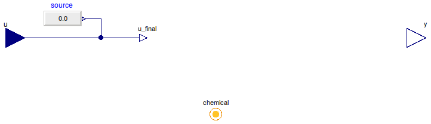

Table of Contents
- User's Guide
- Blocks
- Conditions
- Assemblies
- Regions
- Subregions
- Phases
- Species
- Connectors
- Characteristics
- Units
- Quantities
- Utilities
- Icons
Download
- Latest version (**Empty; please check back soon or contact kdavies4 at gmail.com.)

| Name | Description |
|---|---|
| Potential | Specify chemical potential (measure current) |
| Current | Specify current (measure chemical potential) |
| Base classes (generally not for direct use) |
 FCSys.Conditions.ByConnector.Chemical.Potential
FCSys.Conditions.ByConnector.Chemical.Potential
| Type | Name | Default | Description |
|---|---|---|---|
| Specification of material condition | |||
| Boolean | internal | true | Use internal specification |
| RealExpression | source | redeclare Modelica.Blocks.So… | Source of internal specification |
| Properties upon outflow | |||
| Velocity | phi[Axis] | {0,0,0} | Velocity [l/T] |
| PotentialAbsolute | sT | Specific entropy-temperature product [l2.m/(N.T2)] | |
| Assumptions | |||
| Axes with translational momentum included | |||
| Boolean | inclTransX | true | X |
| Boolean | inclTransY | true | Y |
| Boolean | inclTransZ | true | Z |
| Measurement | |||
| RealOutput | y | chemical.Ndot | Measurement expression |
| Type | Name | Description |
|---|---|---|
| input RealInput | u | Value of specified condition |
| Chemical | chemical | Connector for a species of a chemical reaction |
| Measurement | ||
| output RealOutput | y | Measurement expression |
model Potential "Specify chemical potential (measure current)" extends FCSys.Conditions.ByConnector.Chemical.BaseClasses.PartialCondition( final y=chemical.Ndot); equation chemical.mu = u_final; end Potential;
FCSys.Conditions.ByConnector.Chemical.Current
| Type | Name | Default | Description |
|---|---|---|---|
| Specification of material condition | |||
| Boolean | internal | true | Use internal specification |
| RealExpression | source | redeclare Modelica.Blocks.So… | Source of internal specification |
| Properties upon outflow | |||
| Velocity | phi[Axis] | {0,0,0} | Velocity [l/T] |
| PotentialAbsolute | sT | Specific entropy-temperature product [l2.m/(N.T2)] | |
| Assumptions | |||
| Axes with translational momentum included | |||
| Boolean | inclTransX | true | X |
| Boolean | inclTransY | true | Y |
| Boolean | inclTransZ | true | Z |
| Measurement | |||
| RealOutput | y | chemical.mu | Measurement expression |
| Type | Name | Description |
|---|---|---|
| input RealInput | u | Value of specified condition |
| Chemical | chemical | Connector for a species of a chemical reaction |
| Measurement | ||
| output RealOutput | y | Measurement expression |
model Current "Specify current (measure chemical potential)" extends FCSys.Conditions.ByConnector.Chemical.BaseClasses.PartialCondition( final y=chemical.mu); equation chemical.Ndot = u_final; end Current;